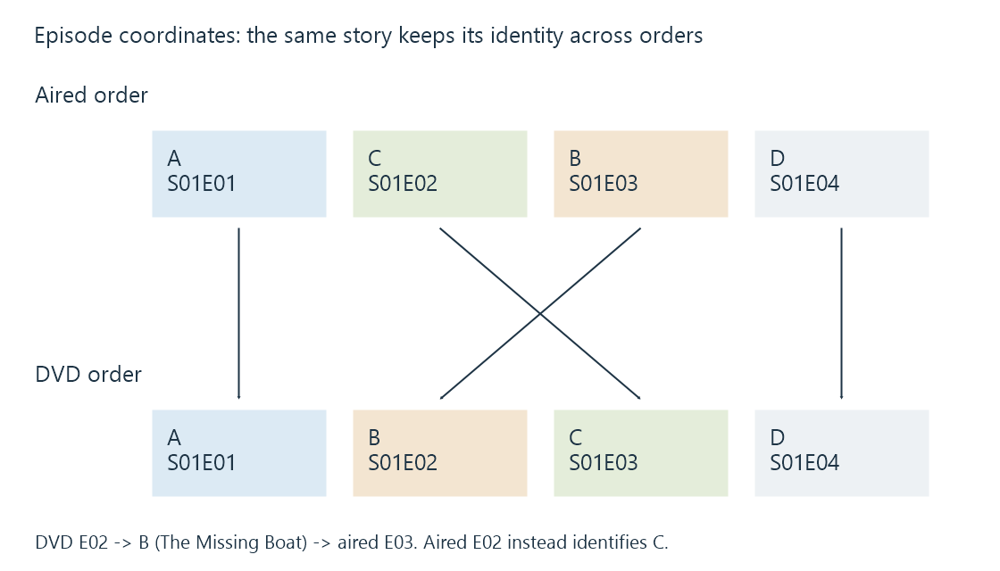

Understanding episode order
Episode order maps a series arrangement and its season or episode coordinates to the actual episodes represented by media resources.
Episode order is the agreement that makes an episode number meaningful. It specifies which episode occupies a particular position in a series arrangement. Aired order, DVD order and absolute numbering can assign different coordinates to the same material.
This is why a filename can be recognized perfectly while its title, synopsis and thumbnail are wrong. The parser may read S01E02 correctly, but the metadata lookup interprets that coordinate under a different agreement from the one used to name the file.
Four stories, two arrangements
The fictional show Harbour Watch has four episode stories. The labels A–D below are stable keys invented for this example; they do not stand for real provider IDs.
| Story key | Episode title | Aired coordinate | DVD coordinate |
|---|---|---|---|
| A | Arrival | S01E01 | S01E01 |
| B | The Missing Boat | S01E03 | S01E02 |
| C | Night Signal | S01E02 | S01E03 |
| D | Departure | S01E04 | S01E04 |
Aired sequence: A → C → B → D. DVD sequence: A → B → C → D.
The bytes of story B do not change when its coordinate changes from aired E03 to DVD E02. What changes is the arrangement used to locate it.

Now take a DVD-derived file named Harbour Watch S01E02.mkv. Its pictures and dialogue contain The Missing Boat—story B. A lookup under aired order asks for story C. The resulting synopsis can be internally correct for aired E02 and still be wrong for the local resource.
Choosing “sort by episode number” cannot repair this. Both interpretations already have a number 2; the problem is which episode the number refers to.
Resolve identity through the arrangement
A reliable interpretation follows a chain:
- Establish the series. Distinguish the original show from a reboot or another show with the same name.
- Establish the arrangement. Determine which order the file's numbers use.
- Interpret the coordinate. Resolve season and episode number within that arrangement.
- Associate the resource. Confirm that the resolved episode matches the file's actual story.
- Present the desired sequence. Display or play the identified episodes using the intended ordering.
The sequence matters. A correct series ID narrows the catalogue, but it does not automatically select an appropriate alternate order. A correct coordinate under the wrong arrangement produces the wrong child identity.
In the worked example, translating DVD E02 into aired order requires two lookups:
DVD S01E02 -> story B
story B -> aired S01E03
Changing 02 to 03 is the last step, not the rule. Another show could map DVD E02 to aired E07, move it to another season, or leave it unassigned in the target arrangement.
For a whole collection, an explicit mapping is safer to reason about than a constant offset. A permutation can cross in both directions: B moves from 2 to 3 while C moves from 3 to 2. Adding one to every number would corrupt the other stories.
Sorting and identification are separate operations
Sorting takes already identified items and chooses their display order. It can put correctly matched episodes in release-date order, title order or another supported presentation.
Identification determines which episode an item represents. It establishes the description and relationships on which sorting operates.
Confusing these operations produces several misleading fixes:
| Change | What it can do | What it cannot establish by itself |
|---|---|---|
| Change display sort | Rearrange identified items | Correct a wrong episode match |
| Rename a coordinate | Supply another naming clue | Prove which story the file contains |
| Select another metadata order | Interpret coordinates under another arrangement | Guarantee a one-to-one match for a recut release |
| Correct provider identity | Associate the right catalogue entity | Supply missing boundaries inside a combined resource |
An ordering field in a product model is evidence that the product represents some order information. It does not imply every catalogue alternate arrangement is exposed, or that changing that field remaps every existing asset and history record automatically.
Alternate releases can change the episodes themselves
Some alternatives are simple permutations like A, C, B, D. Others change segmentation.
Imagine the DVD contains one 44-minute programme combining A and B, while the aired catalogue describes two 22-minute episodes. The relationship is now:
DVD programme X -> aired episode A + aired episode B
There is no single aired coordinate that fully represents X. A multi-episode relationship, a catalogue record for the combined programme, or some other explicit representation is needed. Treating X as only A loses B; treating the file as two independent full-length resources pretends a boundary exists that the player may not know.
TheTVDB documents alternate season types and orders that can include differently cut episodes. Its multi-segment policy also describes combined DVD episodes. These are concrete reasons why “choose DVD order” is not universally equivalent to rearranging the same episode records.
A recut can go further by moving scenes between programmes. Then matching a title or total runtime is insufficient. The resource's release context and actual content must establish which catalogue description applies.
Specials have identity and placement
A special often has a coordinate such as S00E03 while its intended viewing position is between two regular episodes. The special's catalogue group and its place in a sequence answer different questions.
Putting every season-zero item before season one is one possible numeric sort, not a universal narrative order. An introductory special, a later holiday episode and a retrospective can require different placements. Television specials develops that relationship separately.
Absolute numbering has another agreement: one series-wide sequence instead of a season/episode pair. It still needs a defined order and rules about specials. The integer alone does not tell us how the catalogue partitions seasons.
What an order correction can affect
A wrong match can attach the wrong title, synopsis, credits and episode thumbnail. Correcting only the visible title leaves the deeper association unresolved.
Viewer state also has an identity scope. A played flag for story B should not become a played flag for story C just because both occupy coordinate E02 in different arrangements. A resume value additionally needs the correct resource timeline. The same reasoning applies to introductory markers and extracted previews.
This does not require a universal recipe for changing every Emby installation. The TV Naming documentation describes supported naming relationships, while provider and server capabilities determine which orders can be selected or represented. The conceptual requirement is to preserve series, arrangement, episode identity and resource correspondence throughout the change.
For the four-story example, success is easy to describe: The Missing Boat continues to identify story B, its local resource remains associated with B, and the chosen display sequence puts it in the intended place. An attractive row labelled “Episode 2” is not enough to establish those results.